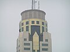
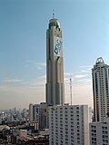
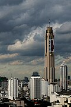

อาคารใบหยก 2 เป็นตึกระฟ้าในกรุงเทพมหานคร ปัจจุบันเป็นตึกที่สูงเป็นลำดับที่ 4 ของประเทศไทย เป็นตึกที่มีจำนวนชั้นมากที่สุดในประเทศไทย ด้วยจำนวน 85 ชั้น เป็นโรงแรมที่สูงที่สุดในประเทศไทย และเคยเป็นตึกที่สูงที่สุดในประเทศไทยระหว่าง พ.ศ. 2540–2559 ก่อนถูกทำลายสถิติโดยตึกคิง เพาเวอร์ มหานคร[5] ซึ่งตึกใบหยก 2 เป็นตึกที่ครองตำแหน่งตึกที่สูงที่สุดในไทยนานที่สุดเป็นเวลา 19 ปี มีลิฟต์แก้วเพื่อขึ้นไปสู่ห้องอาหารชั้นที่ 77 ตั้งอยู่ในย่านประตูน้ำ ซอยราชปรารภ 3 ถนนราชปรารภ แขวงถนนพญาไท เขตราชเทวี กรุงเทพมหานคร
ภาพรวม
ใบหยก 2 เป็นอาคารในเครือใบหยก ซึ่งมี พันธ์เลิศ ใบหยก เป็นประธานและกรรมการผู้จัดการ ก่อสร้างเสร็จในปี พ.ศ. 2540 โรงแรมเริ่มเปิดให้บริการใน 14 มกราคม พ.ศ. 2541 และในปีเดียวกันมีการติดตั้งเสาส่งสัญญาณโทรทัศน์ช่อง ไอทีวี ออกอากาศระบบยูเอชเอฟ ช่อง 29 ของตึกใบหยก 2 ที่ความสูง 54 เมตร (150 ฟุต) บนยอดตึก และหลังจากนั้น สทท. กรมประชาสัมพันธ์ ระบบวีเอชเอฟ ช่อง 11 / วันพฤหัสบดีที่ 29 กรกฎาคม พ.ศ. 2547 โมเดิร์นไนน์ทีวี (ชื่อในขณะนั้นของ ช่อง 9 เอ็มคอตเอชดี) ระบบวีเอชเอฟ ช่อง 9 / เดือนมีนาคม พ.ศ. 2548 ช่อง 3 ได้เปลี่ยนระบบการส่งเป็นระบบยูเอชเอฟ ช่อง 32 ออกอากาศรวมกันโดยใช้เสาส่งสัญญาณโทรทัศน์ช่องไอทีวีออกอากาศ (ต่อมาใช้ชื่อว่า ทีไอทีวี และปัจจุบันใช้ชื่อว่า ไทยพีบีเอส) ซึ่งตึกใบหยก 2 นับว่าเป็น ตึกระฟ้า หลังแรกของ ประเทศไทย ที่มีความสูงเกิน 300 เมตร
อุบัติเหตุ
วันที่ 7 พฤษภาคม พ.ศ. 2555 เกิดอุบัติเหตุกับพนักงานติดป้ายโฆษณาของบริษัทโตชิบากำลังปฏิบัติงานอยู่ที่ชั้น 68 ของตึกใบหยก 2 จนทำให้พนักงานตกลงมาเสียชีวิตทันที 3 รายและบาดเจ็บอีก 2 ราย
ตึกใบหยก 1
ตึกใบหยก 1 ตั้งอยู่เลขที่ 130 ถนนราชปรารภ มีชั้นทั้งหมด 43 ชั้น มีความสูง 151 เมตร สร้างเสร็จเมื่อปี พ.ศ. 2530 และเคยเป็นตึกที่สูงที่สุดใน ประเทศไทย ช่วง พ.ศ. 2530 ถึง พ.ศ. 2536 ก่อนจะถูกตึก สินสาธร ทาวเวอร์ ทำลายสถิติในปี พ.ศ. 2536 ตัวตึกมีจุดเด่นคือยอดตึกมีลักษณะเป็นโครงสามเหลี่ยมยอดแหลมและทาสีไล่เฉดเป็นสีรุ้ง เป็นที่ตั้งของโรงแรมใบหยกสวีทและมีร้านอาหารบนยอดตึกชื่อสกายเลาจน์ ชั้นล่างเป็นศูนย์รวมส่งเสื้อผ้าและศูนย์การค้าขนาดเล็ก